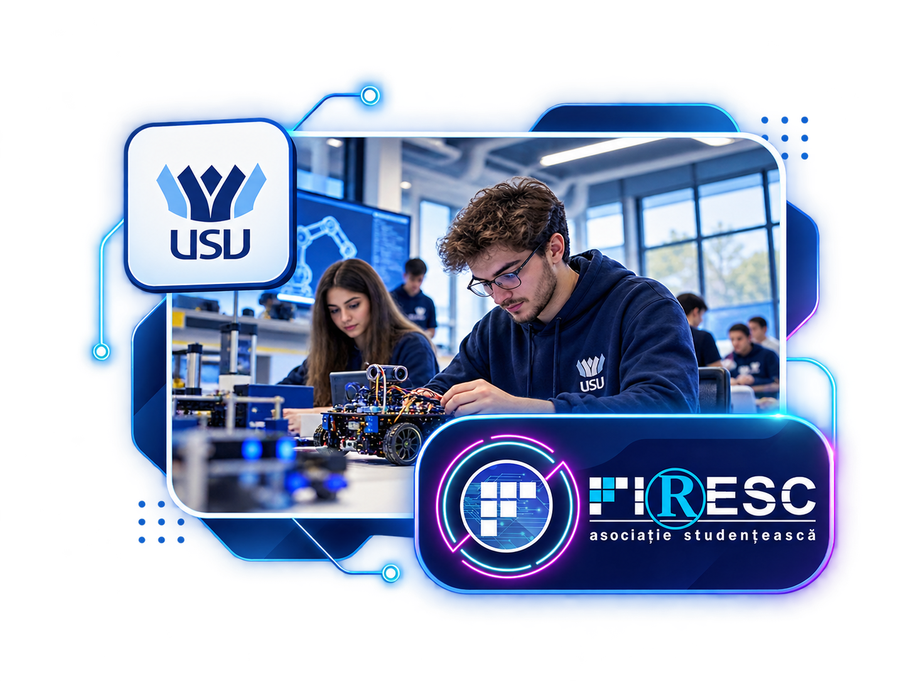

Software & digital foundations
- Computer Programming & Programming Languages
- Applied Informatics
- Introduction to AI & Cybersecurity
- Software for Automotive Engineering
My academic path combines software, electronics, control systems and automotive engineering — a foundation that helps me understand both the digital product and the physical system it has to work with.

The program sits at the intersection of programming, electronics, control, automotive systems and embedded technology. That mix is exactly what makes it useful to the kind of products I want to build.
A technical curriculum that moves from core engineering foundations toward software, embedded control, vehicle electronics, communication systems and diagnostics.
 LEARNING BY BUILDING
LEARNING BY BUILDING
I learn best when academic concepts become something concrete: a diagnostic flow, a microcontroller behavior, a connected robot, a CAD component or a piece of software that has to work outside the IDE.
That is why my personal projects often cross the same boundaries as my degree — software on one side, electronics and physical systems on the other.
I was involved with FIRESC, the student association connected to the university environment. That experience added a different layer to my education: collaboration, initiative, communication and being part of a community outside the classroom.
My degree gives me the engineering context behind the systems I build. My own projects push me beyond the syllabus and force me to connect software, AI, hardware and product thinking in practice.
See what I build ↗